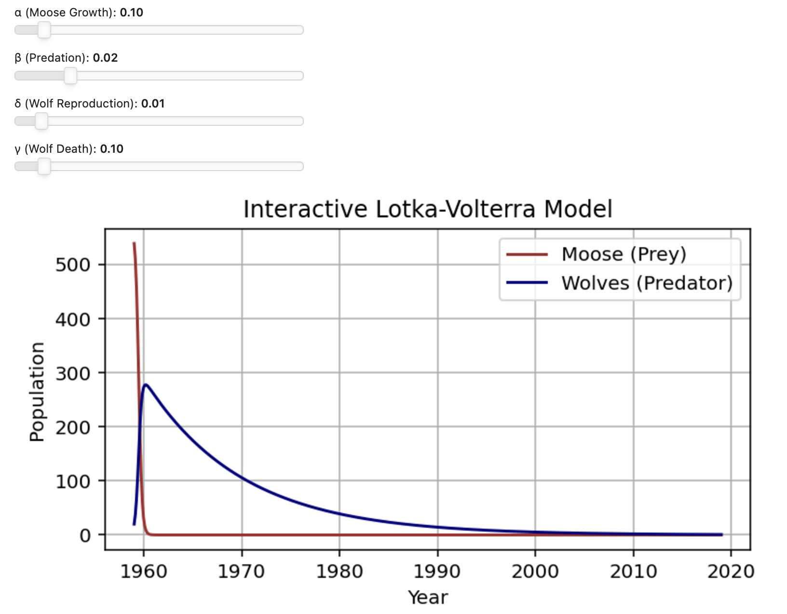
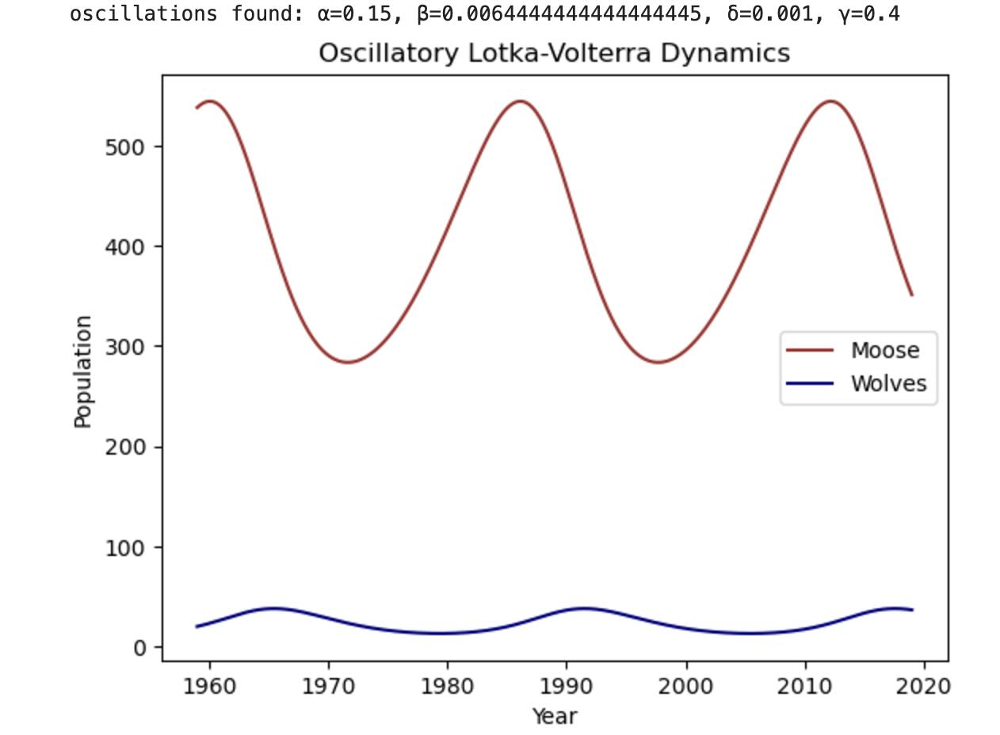

| Click here to go to Source Code | |
|  |
Given that we some ocillations in the two populations we experimented with the lotka-volterra model with different parameters. |
|  |
Oscillatory Dynamics
|
|
To try and make our model more representative of the actual complexity of the ecosystem, we want to take into consideration some of the real-world events that happened to these populations.
|
|